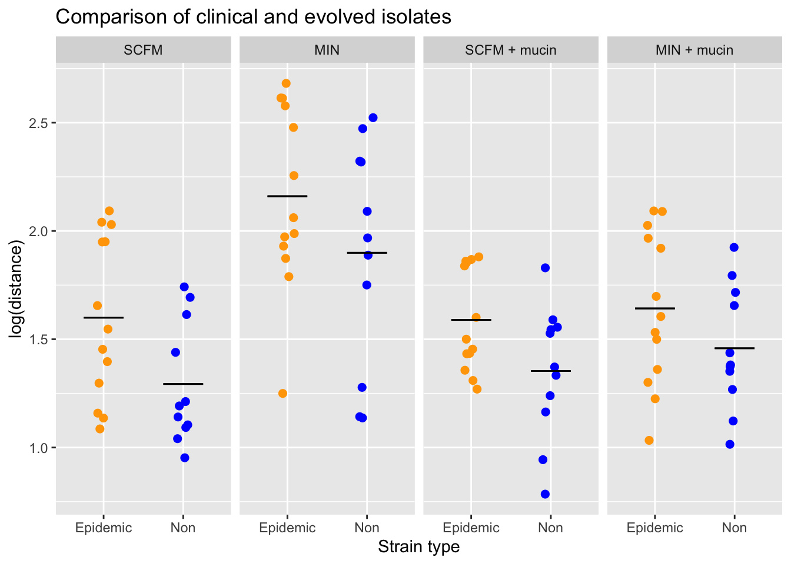

This data set comes from a short-term evolution experiment investigating adaptation of Pseudomonas aeruginosa to cystic fibrosis lung-like conditions. Several populations were evolved under four different environmental conditions and then compared to a set of strains isolated from clinical samples (ie. strains that had evolved in the human lung).
You can find the data set here and you can read more about the experimental setup here.
Use this data set to produce the plot below.
Modify your plot so that is looks like this:

Your plot need not be identical, but should plot the same data with the same plot features, including:
env_key <- c("6scfm" = "SCFM", "7min" = "MIN", "8scfm_mucin" = "SCFM + mucin", "9min_mucin" = "MIN + mucin")
data <- data %>%
mutate(env_name = env_key[env])
data$env_name <- factor(data$env_name, levels = c("SCFM", "MIN","SCFM + mucin", "MIN + mucin"))
ggplot(data, aes(type, log10(dist), colour = type)) +
geom_jitter(size = 2, show.legend = F, width = 0.1) +
facet_grid(~env_name) +
ylab("log(distance)") +
scale_x_discrete(labels = c("Epidemic", "Non")) +
scale_colour_manual(values = c("orange", "blue")) +
ggtitle("Comparison of clinical and evolved isolates") +
stat_summary(geom = "errorbar", fun.y = mean, width = 0.5, colour = "black", aes(ymax =..y.., ymin =..y..)) +
xlab("Strain type")